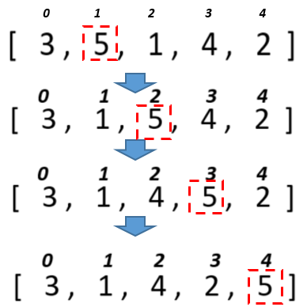

-
Задача 1:
- Дано масив 30 випадкових цілих чисел. Підрахувати скільки було обмінів під час сортування бульбашкою
- Дано масив 30 випадкових цілих чисел. Підрахувати скільки було обмінів під час сортування змішуванням.
- Дано масив 30 випадкових цілих чисел. Підрахувати скільки було обмінів під час сортування включеннями.
-
Для розглянутих методів сортування спробувати вивести етапи сортування шляхом
виведення відповідних таблиць за зразком.
Тобто кожного разу після обміну елементів вивести поточний стан масиву на екран.
-
Задача 2:
- Дано масив імен. Застосовуючи відповідне сортування та бінарний пошук визначити, чи є у масиві ім’я «Olga» і під яким індексом.
- Дано масив імен. Застосовуючи відповідне сортування та бінарний пошук визначити, чи є у масиві ім’я довжиною 5 символів і під яким індексом.
-
Задача 3:
Сформувати двовимірний масив (4*8) з номерами днів (описати окремий тип для днів). Заповнити його випадковим чином. Підрахувати для кожного рядка кількість неділь.
Рішення